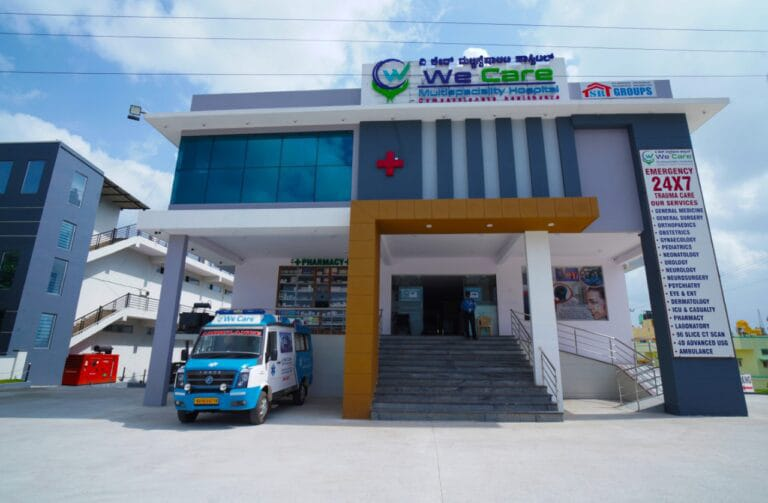

HOME
ABOUTHOSPITAL
 .png)
We care is a network of hospital and healthcare in india. Founded in 1992 as a autonomasinstitution to serve as a nucleus for nurtuing excellence in all aspect of health care.
Twenty-five clinical departments including four super specialty centers manage practically alltypes of disease conditions with support from pre- and Para-clinical departments.
However, burncases, dog-bite cases and patients suffering from infectious diseases are not entertained in the wecare Hospital. we care also manages a 60-beded hospital in the Comprehensive Rural HealthCentre at Ballabgarh in Haryana and provides health cover to about 2.5 lakh population throughthe Centre for Community Medicine.
OUR VISION
Our passion well reflects in the fact that we set the industry standards when it comes to cure,care and comfort. To deliver International Class healthcare with a total service focus,
by creatingan institution committed to the highest standards of medical & service excellence, patient care,scientific knowledge and medical education.
OBJECTIVES
- To develop a pattern of teaching in undergraduate and postgraduate medicaleducation in all its branches so as to demonstrate high standard of medical education to allmedical colleges and other allied institutions in India
- To bring together in one place educational facilities of the highest order for the training of the personnel in all important branches of the health activity.
- To attain self sufficiency in postgraduate in medical education.